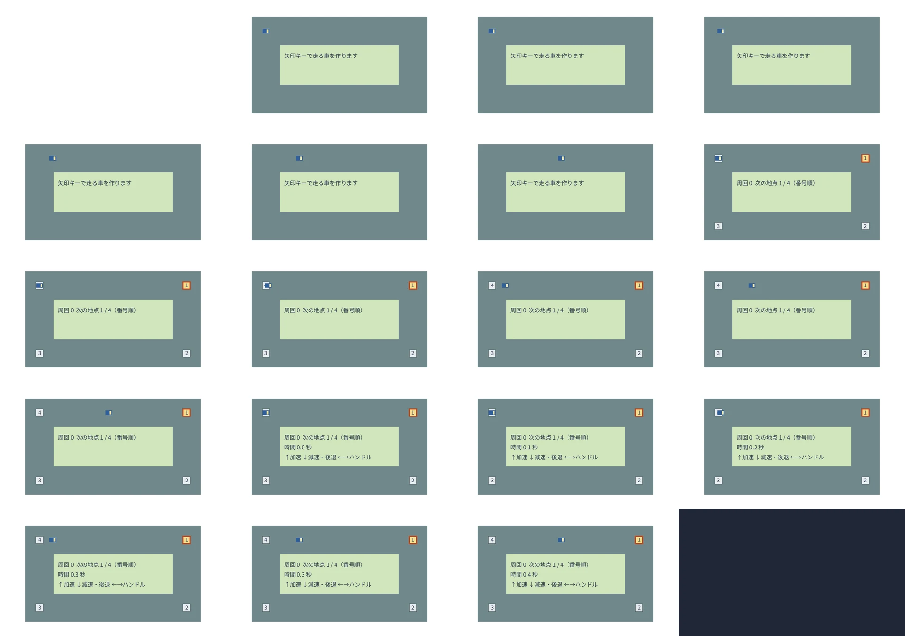
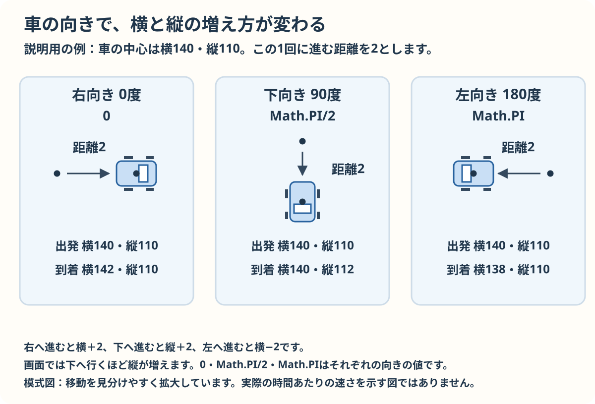
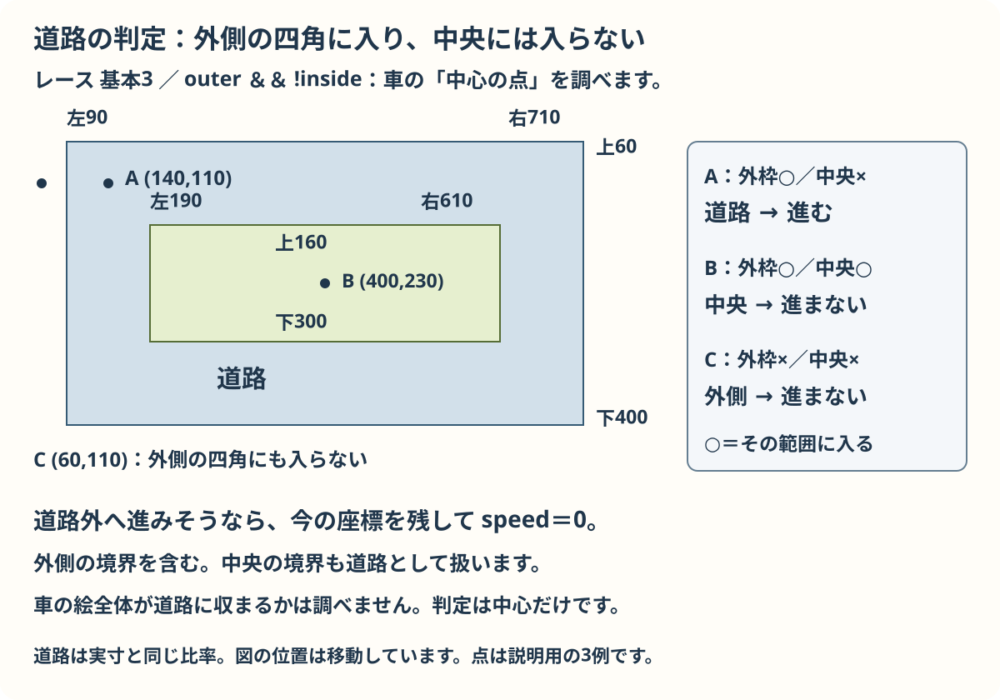
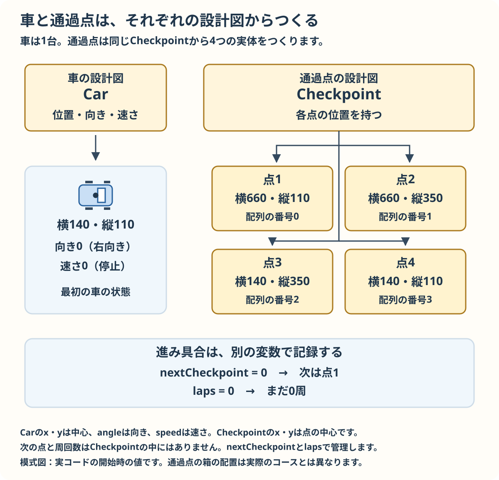
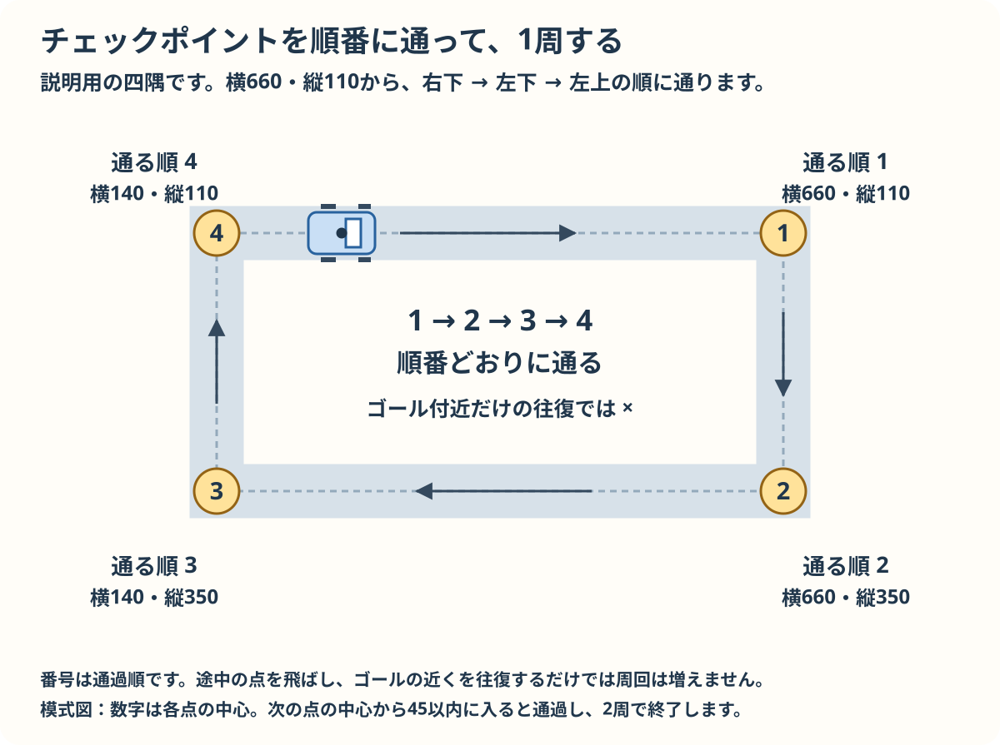

周回タイムアタック
上級者向け
矢印キーで車を運転し、順番に4地点を通って2周します。記録は完走までの時間です。Rで再挑戦します。
始める前に
ZIPを展開してできたフォルダーでindex.htmlを開きます。ZIPにはひな型の3ファイルが入っています。
WindowsでZIPを展開する（動画）
3つのファイルは同じフォルダーに入っています。
各ステップでは作業用の script.js を開き、目印を探して、示されたコードを順に追加または置き換えます。index.html と style.css は変更しません。保存後、作業用の index.html を開くか再読み込みします。
document.querySelector("#game-canvas") はHTMLのCanvasを選び、getContext("2d") で絵を描く道具を取り出します。start() は最初の設定、update() は更新、draw() は描画です。gameLoop() は requestAnimationFrame で更新と描画を繰り返します。
ステップ 1：コースと車をクラスで描く
このステップの見本を図で見る
fillRect(90,60,620,340); fillRect(190,160,420,140)
内側を草の色で重ねる
translate(140,110); rotate(0); fillRect(-12,-8,24,16)
左上の道路に車を置く
ゲーム画面とコードの前後を見る

このステップの見本
この行を足す前 変わったコードの一例（script.js）
ctx.fillRect(90, 60, 620, 340);
見本で確かめること
道路と、左上に右向きの車が見えます。
目標
上から見たコースと車を表示します。
コースの型を作る
作業用フォルダーの script.js で、start() の直前に追加します。
目印
function start() {追加するコード
class Course {
}class Course はコースを作るための型です。中に道路の判定と描画を順に追加します。
道路の範囲を調べる
作業用フォルダーの script.js で、Course の開き波括弧の下に追加します。
目印
class Course {追加するコード
contains(x, y) {
const outer = x >= 90 && x <= 710 && y >= 60 && y <= 400;
const inside = x > 190 && x < 610 && y > 160 && y < 300;
return outer && !inside;
}x と y は調べる位置です。outer は外側の四角、inside は内側の四角です。外側に入り、内側に入らないとき道路です。&& は両方、! は真偽の反転を表します。
コースを描く
作業用フォルダーの script.js で、Course を閉じる波括弧の直前に追加します。
目印
}
function start() {追加するコード
draw() {
ctx.fillStyle = "#71888c";
ctx.fillRect(90, 60, 620, 340);
ctx.fillStyle = "#d1e6bd";
ctx.fillRect(190, 160, 420, 140);
}fillRect の4つの数は左上の横・縦位置、幅、高さです。外側の灰色と内側の緑色の四角で道路を表します。
車の型を作る
作業用フォルダーの script.js で、start() の直前に追加します。
目印
function start() {追加するコード
class Car {
}Car は車の位置、向き、速さをまとめる型です。
車の初期値を覚える
作業用フォルダーの script.js で、Car の開き波括弧の下に追加します。
目印
class Car {追加するコード
constructor(x, y) {
this.x = x;
this.y = y;
this.angle = 0;
this.speed = 0;
}constructor は車を作るときに動きます。this.x・this.y は位置、angle は向き、speed は速さです。最初は向きと速さが0です。
車の向きに合わせて描く
作業用フォルダーの script.js で、Car を閉じる波括弧の直前に追加します。
目印
}
function start() {追加するコード
draw() {
ctx.save();
ctx.translate(this.x, this.y);
ctx.rotate(this.angle);
ctx.fillStyle = "#305f9a";
ctx.fillRect(-12, -8, 24, 16);
ctx.fillStyle = "#f7e7a3";
ctx.fillRect(3, -6, 6, 12);
ctx.restore();
}
save() で設定を覚え、translate で車の位置に移り、rotate で向きを変えます。車を描いた後、restore() で設定を戻します。
コースと車を覚える
作業用フォルダーの script.js で、start() の直前に追加します。
目印
function start() {追加するコード
let course, car;course と car は、作ったコースと車を覚える変数です。
コースと車を作る
作業用フォルダーの script.js で、start() の開き波括弧の下に追加します。
目印
function start() {追加するコード
course = new Course();
car = new Car(140, 110);new でそれぞれの実体を作ります。車は横140、縦110から始まります。
ここで保存し、作業用の index.html を再読み込みします。エラーがなく、まだ画面は空のままであることを確かめます。
ゲーム画面に描く
作業用フォルダーの script.js で、draw() の画面を消す行の下に追加します。
目印
ctx.clearRect(0, 0, canvas.width, canvas.height);追加するコード
course.draw();
car.draw();
ctx.fillStyle = "#26334a";
ctx.font = "20px sans-serif";
ctx.fillText("矢印キーで走る車を作ります", 205, 205);コースを先に、車をその上に描きます。fillText は横205、縦205に案内を表示します。
保存後の確認
保存してゲーム画面を更新する（動画）
index.html を再読み込みします。道路と、左上に右向きの車が見えます。 ステップ 1 の見本を開く
小さな練習
車の色を変えてみます。 練習後はこのステップのコードに戻してください。
ステップ 2：加速して向きに進む
このステップの見本を図で見る
このステップの見本
この行を足す前 変わったコードの一例（script.js）
if (keys.ArrowUp) this.speed = Math.min(3, this.speed + 0.1);
見本で確かめること
上で加速し、左右で曲がります。
目標
矢印キーで加速、減速、ハンドルを操作します。
車を更新する場所を作る
作業用フォルダーの script.js で、Car を閉じる波括弧の直前に追加します。
目印
}
let course, car;追加するコード
update() {
}
update() に車の速さ、向き、位置の更新を追加します。
加速と減速を決める
作業用フォルダーの script.js で、車の update() の開き波括弧の下に追加します。
目印
update() {追加するコード
if (keys.ArrowUp) this.speed = Math.min(3, this.speed + 0.1);
else if (keys.ArrowDown) this.speed = Math.max(-1, this.speed - 0.1);
else this.speed *= 0.98;上キーは速さに0.1を足し、Math.min で上限3にします。下キーは0.1引き、Math.max で下限-1にします。どちらも押さなければ0.98倍して減速します。両方を同時に押したときは、先に調べる上キーが優先です。
走行中に向きを変える
作業用フォルダーの script.js で、減速する行の下に追加します。
目印
else this.speed *= 0.98;追加するコード
if (Math.abs(this.speed) > 0.01) {
if (keys.ArrowLeft) this.angle -= 0.06;
if (keys.ArrowRight) this.angle += 0.06;
}Math.abs は符号を除いた速さです。0.01より速いとき、左右キーで向きを0.06ずつ変えます。停止中は向きを変えません。角度はラジアンで、0は右、Math.PI / 2 は下、Math.PI は左です。
向きに沿って移動する
作業用フォルダーの script.js で、右キーで向きを変える条件の閉じ波括弧の下に追加します。
目印
if (keys.ArrowRight) this.angle += 0.06;
}追加するコード
const nextX = this.x + Math.cos(this.angle) * this.speed;
const nextY = this.y + Math.sin(this.angle) * this.speed;
this.x = nextX;
this.y = nextY;Math.cos と Math.sin で向きに応じた横・縦の割合を求め、速さを掛けて次の位置に足します。向きの単位はラジアンです。

車の中心が横140・縦110にあり、この1回に進む距離が2だとします。右向きの0度なら横142・縦110、下向きの90度なら横140・縦112へ進みます。左向きの180度なら横138・縦110です。画面では、下へ進むほど縦の数が増えます。
この距離2は1回の更新の例です。実際の speed は矢印キーによって変わります。
キーの状態を覚える
作業用フォルダーの script.js で、先頭の変数宣言を置き換えます。
置き換える範囲
let course, car;置き換えるコード
let course, car, keys;keys に押されているキーの状態を覚えます。
キーを初期化する
作業用フォルダーの script.js で、start() で車を作る行の下に追加します。
目印
car = new Car(140, 110);追加するコード
keys = {};{} は空のオブジェクトです。開始時にキーの記録を空にします。
車の更新を呼ぶ
作業用フォルダーの script.js で、ゲーム全体の update() の開き波括弧の下に追加します。
目印
function update() {追加するコード
car.update();ゲームを更新するたび、車の update() を呼びます。
ここで保存して再読み込みします。コースと車が表示され、キー操作を追加する前なので車は止まっています。
キーを押した状態を記録する
作業用フォルダーの script.js で、gameLoop() の直前に追加します。
目印
function gameLoop() {追加するコード
window.addEventListener("keydown", (event) => {
if (event.key === "ArrowUp" || event.key === "ArrowDown" ||
event.key === "ArrowLeft" || event.key === "ArrowRight") {
keys[event.key] = true;
event.preventDefault();
}
});矢印キーが押されたら、そのキーの値を true にします。|| はどれかが成り立つこと、preventDefault() はページのスクロールを防ぐことを表します。
離したキーを解除する
作業用フォルダーの script.js で、gameLoop() の直前に追加します。
目印
function gameLoop() {追加するコード
window.addEventListener("keyup", (event) => {
if (event.key === "ArrowUp" || event.key === "ArrowDown" ||
event.key === "ArrowLeft" || event.key === "ArrowRight") {
keys[event.key] = false;
event.preventDefault();
}
});keyup はキーを離した出来事です。離したキーを false に戻します。
保存後の確認
上で加速し、左右で曲がります。キーを離すと少しずつ減速します。 ステップ 2 の見本を開く
小さな練習
最高速度3を2に変え、曲がりやすさを比べます。 練習後はこのステップのコードに戻してください。
ステップ 3：道路の外へ出ない
このステップの見本を図で見る
このステップの見本
this.y = nextY;
変わったコードの一例（script.js）this.x = nextX;
見本で確かめること
道路の端に進もうとすると、車は直前の位置に残り速さが0になります。
目標
車の中心が道路の外へ出る動きを止めます。
道路の外へ出ないようにする
作業用フォルダーの script.js で、車の update() で次の位置を代入する2行を置き換えます。
置き換える範囲
this.x = nextX;
this.y = nextY;置き換えるコード
if (course.contains(nextX, nextY)) {
this.x = nextX;
this.y = nextY;
} else {
this.speed = 0;
}course.contains(nextX, nextY) が真なら次の位置へ進みます。道路の外なら位置を変えず、速さを0にします。

車の中心が外側の四角に入り、中央の内側に入らないときに道路と判定します。外側と中央の境界は道路に含みます。道路外へ進もうとすると、位置を変えず速さを0にします。
保存後の確認
道路の端に進もうとすると、車は直前の位置に残り速さが0になります。 ステップ 3 の見本を開く
小さな練習
道路幅を変えて、走りやすさを確かめます。 練習後はこのステップのコードに戻してください。
ステップ 4：4地点を順に通る
このステップの見本を図で見る
このステップの見本
この行を足す前 変わったコードの一例（script.js）
return Math.hypot(x - this.x, y - this.y) <= 45;
見本で確かめること
右上から順に4地点を通ると周回が1増えます。
目標
右上、右下、左下、左上を順に通り、1周を数えます。
通過地点の型を作る
作業用フォルダーの script.js で、コースと車の変数宣言の直前に追加します。
目印
let course, car, keys;追加するコード
class Checkpoint {
}Checkpoint は通過する地点の位置と判定をまとめる型です。
地点の位置を覚える
作業用フォルダーの script.js で、Checkpoint の開き波括弧の下に追加します。
目印
class Checkpoint {追加するコード
constructor(x, y) {
this.x = x;
this.y = y;
}地点を作るときに渡された横・縦の位置を this.x と this.y に保存します。
地点からの距離を調べる
作業用フォルダーの script.js で、Checkpoint を閉じる波括弧の直前に追加します。
目印
}
let course, car, keys;追加するコード
contains(x, y) {
return Math.hypot(x - this.x, y - this.y) <= 45;
}Math.hypot は横と縦の差から中心間の距離を求めます。距離が45以下なら通過したと判定します。

車はCarという設計図からつくり、自分の位置・向き・速さを持ちます。4つの通過点は、同じCheckpointという設計図からつくった別々の実体で、それぞれの中心の位置を持ちます。次に通る点はnextCheckpoint、何周したかはlapsという別の変数で記録します。最初は次の点の番号が0、周回数も0です。
new Checkpoint(...) で作る4点は、同じクラスから生まれた別々の実体です。車とは別に nextCheckpoint と laps で進行を記録します。
地点と番号を描く
作業用フォルダーの script.js で、Checkpoint を閉じる波括弧の直前に追加します。
目印
}
let course, car, keys;追加するコード
draw(number, active) {
ctx.fillStyle = active ? "#f8dc8b" : "#e6ebee";
ctx.fillRect(this.x - 13, this.y - 13, 26, 26);
ctx.strokeStyle = active ? "#b64a27" : "#52666b";
ctx.lineWidth = active ? 4 : 2;
ctx.strokeRect(this.x - 13, this.y - 13, 26, 26);
ctx.fillStyle = "#26334a";
ctx.font = "18px sans-serif";
ctx.fillText(String(number), this.x - 5, this.y + 6);
}active ? A : B は次に通る地点ならA、それ以外ならBを選びます。中心から13ずらし、26×26の四角と番号を描きます。
地点と周回を覚える
作業用フォルダーの script.js で、先頭の変数宣言を置き換えます。
置き換える範囲
let course, car, keys;置き換えるコード
let course, car, keys, checkpoints, nextCheckpoint, laps;checkpoints は地点の配列、nextCheckpoint は次の地点の番号、laps は周回数です。
4地点を順に用意する
作業用フォルダーの script.js で、start() のキーを初期化する行の下に追加します。
目印
keys = {};追加するコード
checkpoints = [new Checkpoint(660, 110), new Checkpoint(660, 350),
new Checkpoint(140, 350), new Checkpoint(140, 110)];
nextCheckpoint = 0;
laps = 0;地点は右上、右下、左下、左上の順です。配列の最初の番号は0なので、次の地点と周回数を0から始めます。

最初は右上の横660・縦110を目指します。そこから右下、左下、左上の順にチェックポイントを通ると1周です。途中の点を飛ばし、ゴールの近くを往復するだけでは周回は増えません。このゲームは2周すると終了します。
nextCheckpoint の地点から車の中心まで45ピクセル以内になると、その地点を通過したと数えます。
ここで保存して再読み込みします。これまでどおりコースと車が表示され、車を動かせることを確かめます。
地点を順に通って周回する
作業用フォルダーの script.js で、ゲーム全体の update() で、車を更新する行の下に追加します。
目印
car.update();追加するコード
if (checkpoints[nextCheckpoint].contains(car.x, car.y)) {
nextCheckpoint++;
if (nextCheckpoint === checkpoints.length) {
laps++;
nextCheckpoint = 0;
}
}次の地点に届いたら番号を1進めます。checkpoints.length は地点の数4です。4地点を通り終えたら周回を1増やし、番号を0に戻します。
地点を番号付きで描く
作業用フォルダーの script.js で、ゲーム全体の draw() でコースを描く行の下に追加します。
目印
course.draw();追加するコード
for (let i = 0; i < checkpoints.length; i++) {
checkpoints[i].draw(i + 1, i === nextCheckpoint);
}i は0から3まで進みます。表示する番号は i + 1、次の地点だけ i === nextCheckpoint が真になり強調されます。
周回と次の地点を表示する
作業用フォルダーの script.js で、案内の文字を描く行を置き換えます。
置き換える範囲
ctx.fillText("矢印キーで走る車を作ります", 205, 205);置き換えるコード
ctx.fillText("周回 " + laps + " 次の地点 " + (nextCheckpoint + 1) + " / 4（番号順）", 205, 205);周回数と次に通る地点を表示します。配列の番号は0からなので、画面には1を足します。
保存後の確認
右上から順に4地点を通ると周回が1増えます。ゴール近くを往復するだけでは増えません。 ステップ 4 の見本を開く
小さな練習
地点の判定半径45を変えて通りやすさを比べます。 練習後はこのステップのコードに戻してください。
ステップ 5：2周の時間を記録する
このステップの見本を図で見る
このステップの見本
この行を足す前 変わったコードの一例（script.js）
if (laps >= 2) state = "clear";
見本で確かめること
実際に道路を2周すると時間が止まり、Rで時間、車、周回と次の地点が戻ります。
目標
2周した時刻を記録し、Rで再挑戦できるようにします。
状態と時間を覚える
作業用フォルダーの script.js で、先頭の変数宣言を置き換えます。
置き換える範囲
let course, car, keys, checkpoints, nextCheckpoint, laps;置き換えるコード
let course, car, keys, checkpoints, nextCheckpoint, laps, state, startTime, elapsed;state は走行中か完走か、startTime は開始時刻、elapsed は経過時間です。
開始時刻を記録する
作業用フォルダーの script.js で、start() の周回数を0にする行の下に追加します。
目印
laps = 0;追加するコード
state = "playing";
startTime = performance.now();
elapsed = 0;状態を走行中にし、performance.now() の現在時刻を保存します。経過時間は0からです。
走行中だけ更新する
作業用フォルダーの script.js で、ゲーム全体の update() の開き波括弧の下に追加します。
目印
function update() {追加するコード
if (state !== "playing") return;
elapsed = performance.now() - startTime;走行中でなければ return で更新を終えます。走行中は現在時刻から開始時刻を引き、経過ミリ秒を求めます。車の移動は更新ごとですが、時間は実際に経過した長さを測ります。
2周で完走する
作業用フォルダーの script.js で、周回後に次の地点を0に戻す処理の後に追加します。
目印
nextCheckpoint = 0;
}
}追加するコード
if (laps >= 2) state = "clear";>= 2 は2以上です。2周すると状態が "clear" に変わり、次の更新から車と時間が止まります。
時間と完走後の案内を描く
作業用フォルダーの script.js で、周回と地点の表示の下に追加します。
目印
ctx.fillText("周回 " + laps + " 次の地点 " + (nextCheckpoint + 1) + " / 4（番号順）", 205, 205);追加するコード
ctx.fillText("時間 " + (elapsed / 1000).toFixed(1) + " 秒", 205, 240);
if (state === "clear") ctx.fillText("2周完走！ R でもう一度", 205, 275);
else ctx.fillText("↑加速 ↓減速・後退 ←→ハンドル", 205, 275);1000ミリ秒は1秒なので、経過ミリ秒を1000で割ると秒です。toFixed(1) で小数第1位まで表示し、完走後はRで再挑戦できることを示します。
Rで再挑戦する
作業用フォルダーの script.js で、keydown の最初の空行を含む次の範囲を置き換えます。
置き換える範囲
window.addEventListener("keydown", (event) => {
if (event.key === "ArrowUp"置き換えるコード
window.addEventListener("keydown", (event) => {
if (!event.repeat && event.key.toLowerCase() === "r") { start(); return; }
if (event.key === "ArrowUp"押しっぱなしの繰り返しを除き、Rで start() を呼んで車・周回・時刻を初期化します。続く矢印キーの条件は残します。
保存後の確認
実際に道路を2周すると時間が止まり、Rで時間、車、周回と次の地点が戻ります。 ステップ 5 の見本を開く
小さな練習
完走後に少し待っても記録が変わらないことを確かめます。 練習後はこのステップのコードに戻してください。